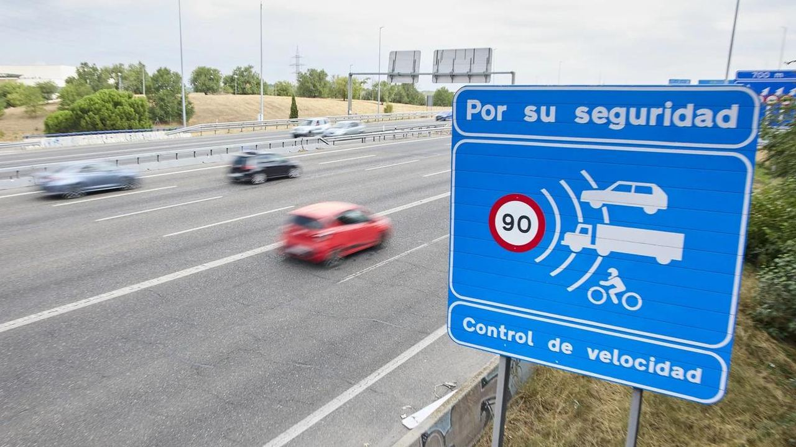

Vivir en España
Multas de tráfico en España – Cuánto cuestan y cómo pagar menos
Cuánto cuestan las multas de tráfico en 2026, cómo funcionan los radares y las tasas de alcohol, coches de alquiler y cómo pagar con un 50 % de descuento.
 Aleksandra Kobus · · 4 min de lectura
Aleksandra Kobus · · 4 min de lectura